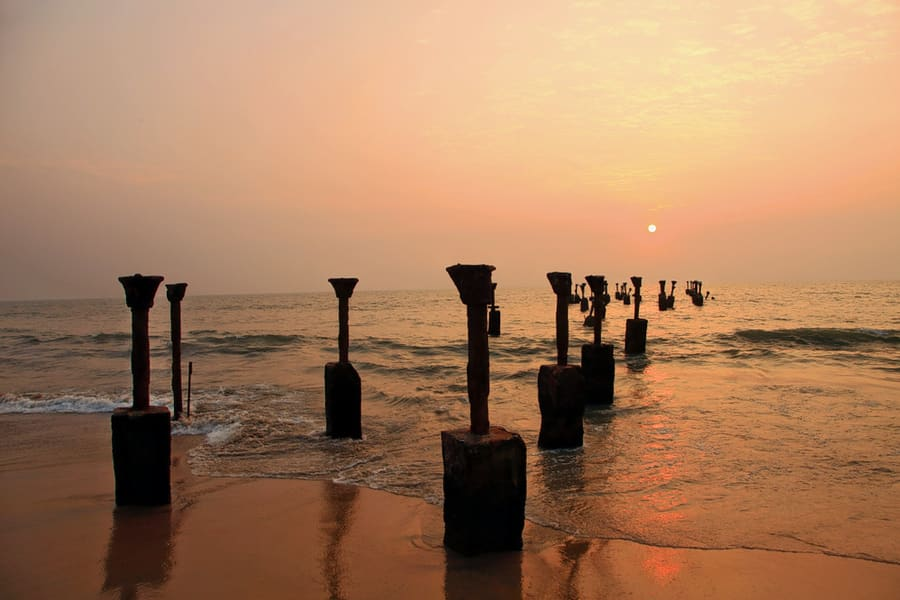
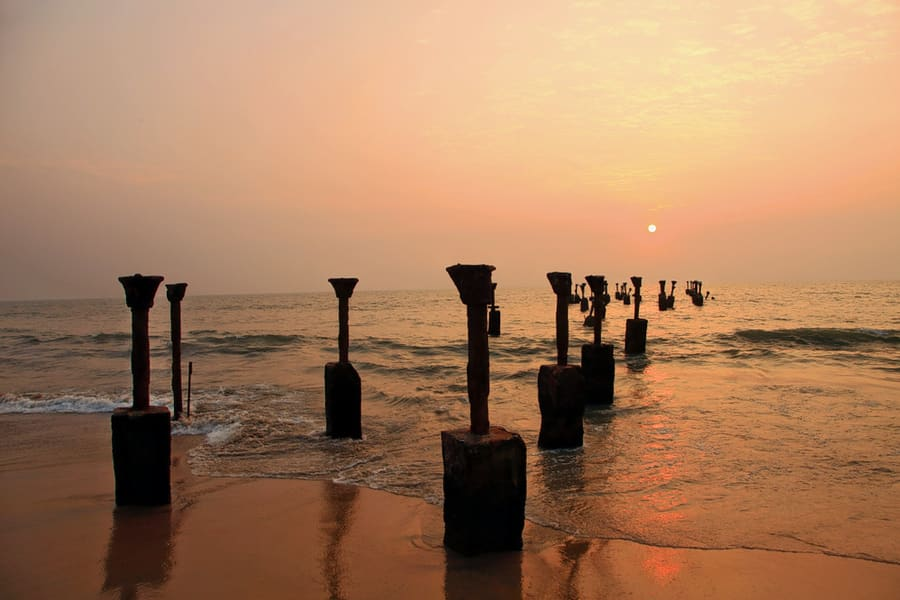
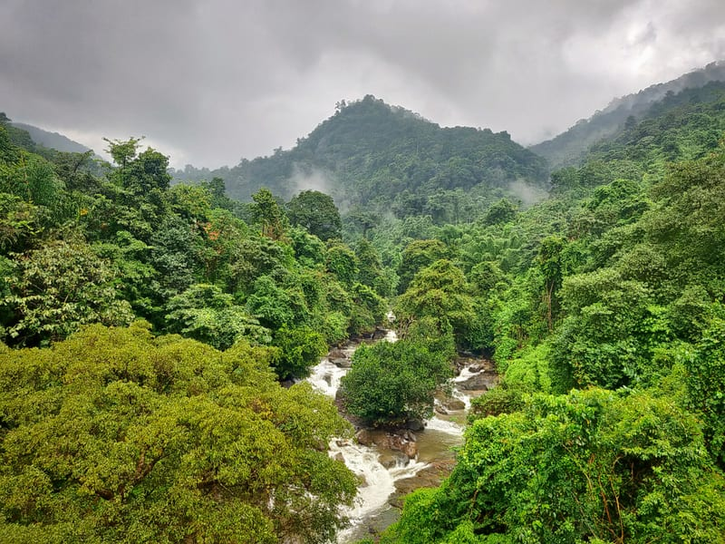
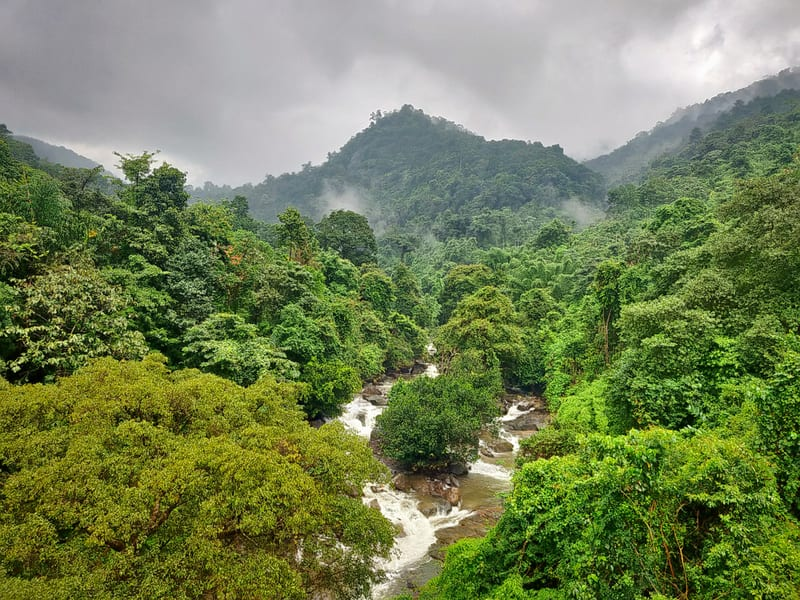

Top destinations in Kozhikode
Kozhikode is a coastal city in the south Indian state of Kerala. It was a significant spice trade center and is close to Kappad Beach, where Portuguese explorer Vasco da Gama landed in 1498. The central Kozhikode Beach, overlooked by an old lighthouse, is a popular spot for watching the sunset.
Situated on the Malabar coast and endowed with natural beauty, Kozhikode beach should be a must in the itinerary of your visit to the city. This beach is renowned for the sunsets that tourists throng here to enjoy.


Previously known as Mananchira Maidan, this place held many football matches. Mananchira scores high as one of the places to visit in Kozhikode. This place provides tranquility to the visitors which is much sought after as one wants to escape the chaotic city life

The Valayanad Devi Temple was built in the 14th century by the Zamorins and this temple is one of the famous holy places to visit in Kozhikode. The temple is a marvel of 14th -century Dravidian architecture and it is different from all other temples of the nearby area. According to folklore, the Zamorins defeated the mighty King Valluva Kolathiri and they believed it was due to the blessings of their family deity Valayanad Vagabathi.
Enjoy the breathtaking beauty of Thusharagiri Fall when you pay a visit to Kozhikode. Two streams originating from the Western Ghats meet at this point to create the Chalipuzzha River. The river further trifurcates to create three waterfalls and the free-falling water creates a mist, thus giving the name “Thusharagiri”.


Kozhikodan Halwa is the quintessential dish that carries the true flavour of the culinary traditions of Kozhikode or Calicut. Many more malabar snack you can have to increase your taste buds